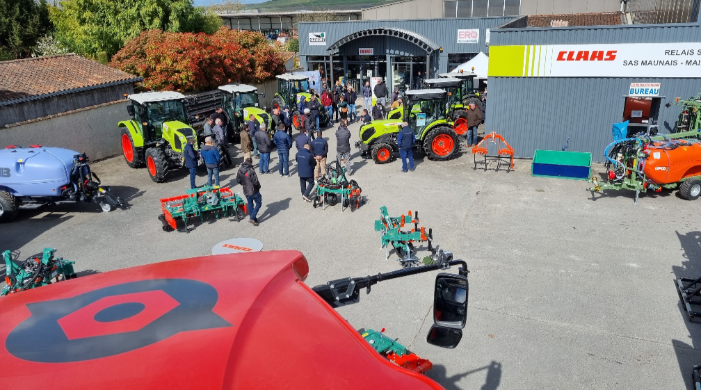
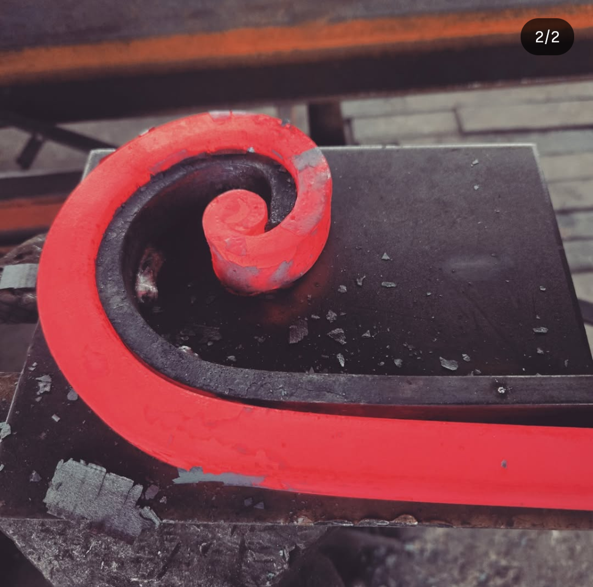
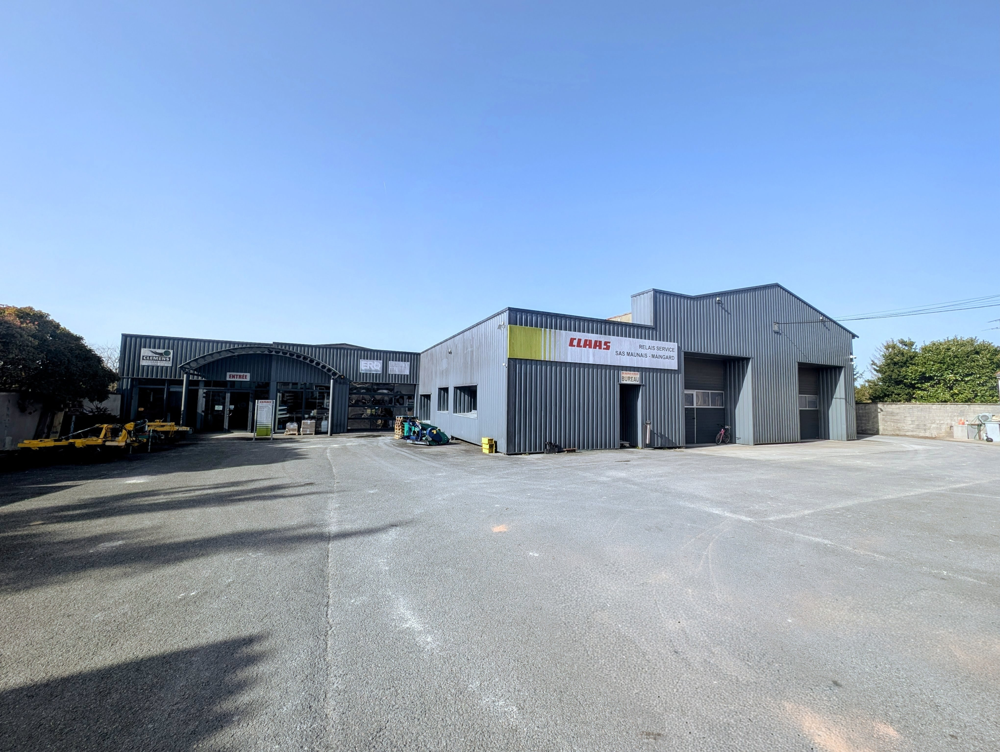

Institution familiale depuis 88 ans
Votre partenaire terrain pour l'agricole, la serrurerie metallerie ferronnerie et la quincaillerie
MAUNAIS MAINGARD accompagne les professionnels et les particuliers avec une meme exigence: disponibilite, conseil concret et suivi dans la duree. Un seul site a Segonzac pour echanger, comparer et repartir avec la bonne solution.

CLAAS
ERO
CLEMENS
LIPCO
SICMA
CLAAS
ERO
CLEMENS
LIPCO
SICMA
Trois expertises pour vos besoins quotidiens
Professionnel ou particulier, vous trouvez au meme endroit un interlocuteur pour l'equipement agricole, la quincaillerie et les projets de serrurerie-metallerie.

Materiel agricole
Vente, concession, pieces detachees et conseil terrain pour vos exploitations.
Voir le pole
Quincaillerie & libre-service
Produits utiles, libre-service et conseil comptoir pour acheter juste et rapidement.
Voir le pole
Serrurerie - Metallerie - Ferronnerie
Fabrication, adaptation, automatisme et interventions sur mesure de proximite.
Voir le pole
Nos zones d'intervention
- Locale (20-25 km) pour la quincaillerie, le libre-service et les achats frequents.
- Regionale (16, 17, vignoble, iles) pour l'equipement agricole et les interventions techniques.
Pourquoi venir en magasin
En ligne, vous preparez votre visite. En magasin, vous obtenez un conseil concret et une solution adaptee a votre besoin reel.
- Un professionnel vous aide a choisir la bonne reference des la premiere visite.
- Verification immediate des disponibilites, des pieces et des compatibilites.
- Vous repartez avec une solution claire pour avancer sans perte de temps.
Un seul site, tous les services MAUNAIS MAINGARD
A Segonzac, l'equipe regroupe le conseil commercial, l'atelier, la quincaillerie et le pole serrurerie metallerie ferronnerie. Vous gagnez du temps et un suivi coherent.
Adresse: 34 Rue Pierre Viala, 16130 Segonzac
Telephone: 05 45 83 41 02
Email: contact@maunais-maingard.fr
Horaires: Lun-Jeu 08:15-12:00 / 14:00-17:45 - Ven 08:00-12:00 / 14:00-17:15
Venir en magasin
Besoin d'un renseignement concret ?
Dites-nous ce que vous cherchez. L'equipe vous oriente rapidement vers la bonne solution et vous indique la meilleure suite: appel, email ou visite magasin.
Materiel agricole, quincaillerie, tondeuses, motoculteurs, serrurerie, metallerie et ferronnerie: un interlocuteur local pour vos projets.